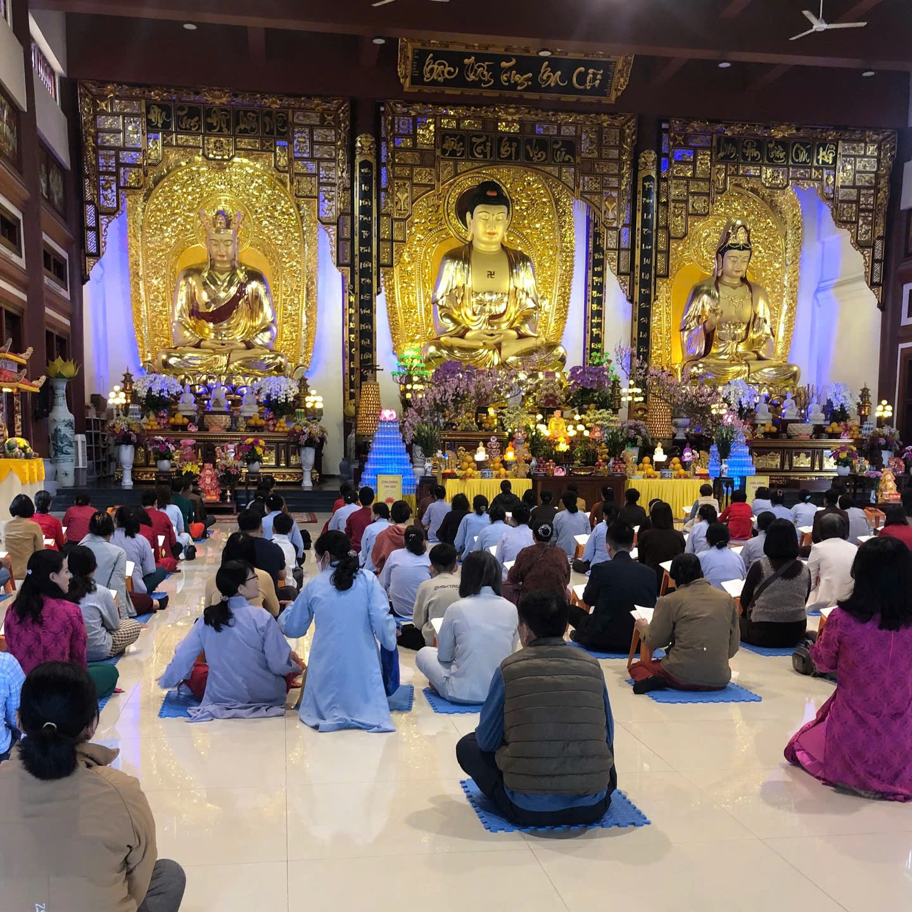
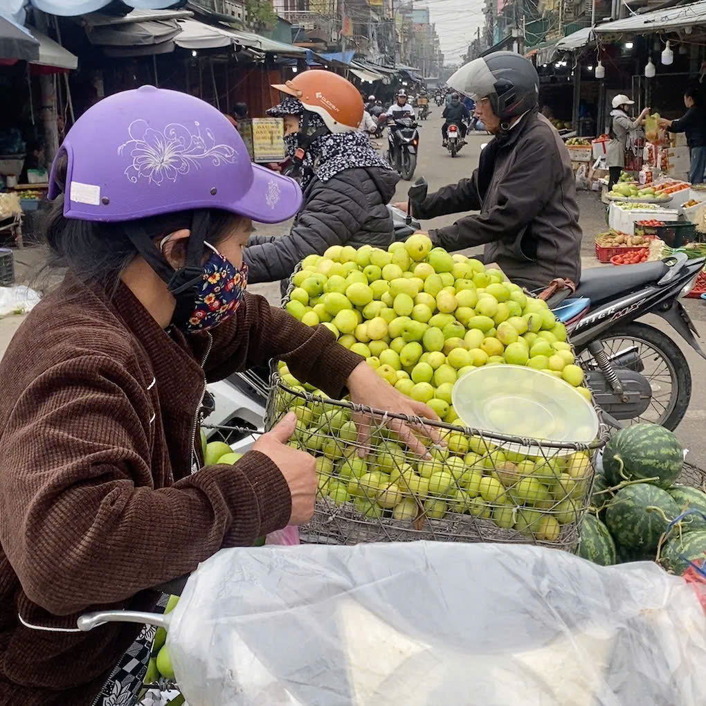

Đi chùa, đền đầu năm
Đi chùa đầu năm là nét đẹp văn hóa tâm linh lâu đời của người Việt, mang ý nghĩa cầu mong bình an, may mắn và tài lộc cho gia đình trong năm mới. Đây là dịp để hướng thiện, thanh tịnh tâm hồn, rũ bỏ muộn phiền năm cũ, đồng thời bày tỏ lòng biết ơn, tri ân Phật và tổ tiên.

Không Khí Chợ Tết
Chợ Tết rực rỡ sắc hoa, đầy ắp bánh mứt và tiếng cười. Người người tấp nập mua sắm, trao nhau lời chúc năm mới, tạo nên bức tranh xuân sống động và ấm áp.

Bữa cơm gia đình ngày Tết
Mâm cơm Tết truyền thống là biểu tượng thiêng liêng của sự sum vầy, lòng hiếu thảo và cầu mong năm mới an khang, thịnh vượng. Gia đình cùng quây quần thưởng thức, gắn kết tình thân.